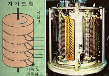
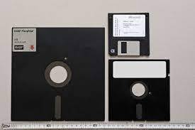
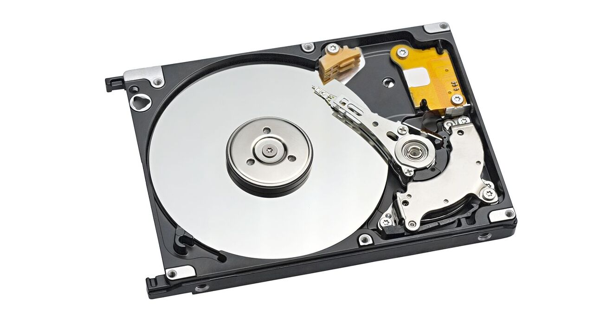

컴퓨터 하드웨어 - 보조 기억 장치
보조 기억 장치
- 주기억 장치는 적은 자료를 기억하여 고속으로 처리한다.
- **그에 반해 많은 양의 자료를 기억시켜 관리하기 위한 장치**를 보조 기억 장치 또는 2차 기억 장치(secondary memory)라 한다.
- 보조 기억 장치의 자료를 액세스하는 방법에 따라 **순차 액세스**와 **임의 액세스**로 분류할 수 있다.
순차 액세스(sequential access)
- 물리적으로 저장된 순서에 따라 자료를 검색해 나가기 때문에 일괄 처리(batch processiong)에 적합하다.
- 그렇기 때문에 빠른 액세스가 요구되는 실시간 처리에는 잘 사용되지 않는다.
- 사용 예 : 자기 테이프
- 사용 예 : 자기 테이프
임의 액세스(random access)
- 원하는 레코드에 직접 액세스할 수 있는 방식
- 레코드를 순차적으로 읽지 않기 때문에 원하는 데이터를 빠르게 검색할 수 있다.
- 주로 실시간 처리 시스템에서 사용된다.
- 사용 예 : 자기 디스크
- 사용 예 : 자기 디스크
보조 기억 장치의 종류
자기 테이프(magnetic tape)
- 플라스틱 테이프의 표면에 자성 도료를 입혀 제작된 것
1) 특성
- 녹음 테이프와 비슷하게 생겼는데 폭이 1/2~3/4인지 정도로 넓고 기록 밀도가 높다.

- 대량의 자료를 반영구적으로 보관할 수 있고 가격이 저렴하다는 장점을 가지고 있다.
- 하지만 테이프가 릴에 순차적으로 감겨 있기 때문에 자료의 순차적 처리만 가능하다.
2) 기록 밀도
- 자기 테이프 1릴(reel)의 길이는 보통 800, 1,200, 1,600, 2,400 피트(feet) 등이며, 테이프의 기록 밀도는 테이프 1인치 당 저장될 수 있는 문자(character)의 수 혹은 바이트(byte)의 수로 계산 되고 있다.
- 이 기록 밀도의 단위를 BPI(Byte Per Inch)라고 하며 800, 1,600, 3,200, 6,250, 20,000BPI 등의 기록 밀도가 있다.
- 자기 테이프는 최초로부터 4~5m 지점에 BOT(Beginning of Tape) 마커가 있고 끝의 6~7m 앞지점에 EOT(End of Tape) 마커가 있는데, 이 부분에는 자료를 수록할 수 없다.
- 자기 테이프는 7개 또는 9개의 트랙(track)으로 구성되어 데이터를 표현한다.
- 자료의 저장은 ASCII 코드나 EBCDIC 코드로 표현된다.
- 파일의 갱신과 보수를 쉽게 하기 위하여 레이블을 사용하는데 레이블에는 표준 레이블, 비표준 레이블, 레이블이 없는 것 세 가지 종류가 있다.
3) 저장 방법
- 레코드는 자기 테이프에 순차적으로 기록되고 읽혀진다.
- 이 때 테이프가 레코드를 읽거나 기록하는 과정에서 테이프를 출발시키거나 멈추게 하는데는 물리적인 가속 및 감속 구간이 필요한데, 이를 IRG(Inter Record Gap)로 나타낸다.
- IRG의 길이는 약 0.3~0.75인치로 각 레코드마다 IRG를 두게 되면 그만큼 저장할 수 있는 공간이 줄어들기 때문에 비효율적이다.
- 따라서 효율성을 위해 몇 개의 레코드를 묶어서 한 개의 물리적 레코드로 만들어 준다.
- 이것을 블록화라고 하며 하나의 블록에 포함된 논리 레코드의 수를 블록화 인수, 각 블록 사이의 간격을 IBG(Inter Block Gap)라 한다.
4) 자기 테이프의 레코드 형식
- 고정 길이 비블록 레코드(fixed unblock record)
- 블록화되지 않은 고정 길이 레코드
- 물리 레코드와 논리 레코드의 길이가 같다.
- 고정 길이 블록 레코드(fixed block record)
- 블록화된 고정 길이 레코드
- 레코드의 길이가 일정하며 하나의 물리 레코드 내에 2개 이상의 논리 레코드가 존재한다.
- 가변 길이 비블록 레코드(variable unblock record)
- 블록화되지 않은 가변 길이 레코드
- 각 논리 레코드의 길이가 일정하지 않다.
- 가변 길이 블록 레코드(variable block record)
- 블록화된 가변 길이 레코드
- 길이가 일정하지 않은 논리 레코드가 블록화되어 있는 형식이다.
- 부정 형식 레코드(undefined record)
- 길이를 나타내는 필드가 없는 가변 길이 레코드
- 비블록 레코드이다.
자기 디스크 장치

- 대용량을 저장할 수 있고 임의로 호출이 가능하기 때문에 은행 업무, 좌석 예약 업무 등 실시간 처리가 요구되는 자료 처리에 효율적이다.
- 처리 속도는 1,200 ~ 3,600 회전/분이며, 기록 밀도는 한 트랙당 3,000 ~ 13,000바이트, 즉 60만 ~ 520만 바이트가 수록된다.
- 자기 디스크 장치는 여러 디스크가 하나의 축에 연결되어 있는데 이것을 디스크 팩(pack)이라 한다.
- 그리고 각 면의 트랙을 수직으로 연결한 트랙군을 실린더(cylinder)라 한다.
- 트랙과 실린더에는 고유 번호인 트랙 번호와 실린더 번호가 있어서 기억 매체상의 주소(address)가 할당되어 있기 때문에 데이터에 직접 액세스 하는 것이 가능하다.
자기 드럼 장치(magnetic drum)

- 초기에 사용되던 주기억 장치
- 새로운 기억 장치가 개발되면서 보조 기억 장치로 사용되기 시작했지만 현재는 그마저도 잘 안 쓴다.
- 직경 20~30cm인 금속 원통의 표면에 자성 물질을 입힌 드럼으로 드럼을 회전시킬 때 표면에 헤드를 접근시켜 기억된 내용을 읽거나 새로운 내용을 기억시킨다.
플로피 디스크 장치(floppy disk)

- 자기 디스크와 같이 데이터를 직접 액세스하며 가볍고 취급이 간편한 반면, 먼지, 햇볕, 열 또는 자성 물질에 가까이 두지 않는 등 관리상 주의가 필요하다.
- 기록 방법에 따라 단밀도, 배밀도, 고밀도 등이 있으며, 2D는 양면 배밀도를 뜻하고 2HD는 양면 고밀도를 뜻한다.
하드 디스크(hard disk)

- 개인용 컴퓨터의 보조 기억 장치로 널리 사용되고 있다.
- 동작 속도는 ms로 나타내며, 보통 평균 액세스 속도와 트랙간 이동 속도, 최대 이동 거리 속도 등을 표시한다.
- 평균 속도가 빠를수록 전체적으로 동작이 빠르며 가격도 높아진다.
- 하드 디스크는 본체에 내장되어 사용되는 것이 보통이나 기억 용량의 증가, 편의성 등으로 외장형 하드 디스크도 사용되고 있다.
광학 디스크(optical disk)
- 레이저를 이용해서 자료를 기록한다.
- 레이저가 필요한 표면에 도착하면 표면을 태워서 비트 형태의 데이터를 저장한다.
- 광학 디스크는 데이터가 잘 지워지지 않는 백업 파일, 역사적 기록 등의 분야에 이용된다.
광 디스크의 종류
1) CD-ROM(Compact Disk-Read Only Memory)

- 지름이 12cm인 소형 디스크 위에 정보를 기록, 저장 및 검색할 수 있는 형식의 시스템으로 광학 드라이브를 이용해서 읽을 수 있다.
- 원본에 정보를 기록하기 위해서는 WORM 장치가 사용된다.
- 오디오 디스크, 비디오 디스크, 각종 상품화된 소프트웨어의 저장에 이용된다.
2) WORM(Write Once Read Memory)
- 디스크에 단 한 번만 정보를 기록할 수 있고 기록한 후에 지울 수 없고 판독만 할 수 있는데, 그 후에는 드라이브에 있는 데이터가 삭제되지 않도록 보호하는 데이터 저장기술이다.
- 문서용 파일, 비디오용 파일 등에 이용된다.
3) MO DISK(Magneto Optical Disk)

- 자기광학 디스크라고도 하며 자기박막의 광자기 효과를 이용하여 자료를 기록하고 읽어낼 수 있는 CD-ROM 형태의 외부 기억 매체
- 자료를 기록할 때엔 레이저광을 사용하여 자화시키는데 이 자화가 유지되어 정보가 기록된다.
- 판독시엔 피트(pit : 광자기 디스크 표면의 미세한 홈)에 반사되는 빛의 유무로 데이터를 판독한다.
- 광자기 디스크는 3.5인치 디스켓보다는 빠르지만 하드 디스크보다는 느리다.
- 광자기 디스크는 자료 백업용 기억매체로 사용하기 좋으며 이동이 간편하고 신뢰성이 높은 것이 장점이다.
- 오디오용, 비디오용, 컴퓨터 데이터 파일 등에 이용된다.
4) DVD
- CD에서 더 발전한 광학 디스크 기술을 이용하는 저장매체이다.
- 외형은 CD와 같지만 다른 포맷으로 저장되며 높은 용량을 가지고 있다.
- DVD는 MPEG-2 파일과 압축 표준을 사용한다.
- MPEG-2 이미지들은 MPEG-1 이미지의 4배 해상도를 가지며, 2개의 필드가 하나의 이미지 프레임을 구성하는 상황에서 초당 60개의 인터레이스드 필드(Interlaced Field)를 전송할 수 있다. (MPEG-1은 초당 30개의 인터레이스되지 않은 프레임을 전송한다)

메모리 계층 구조